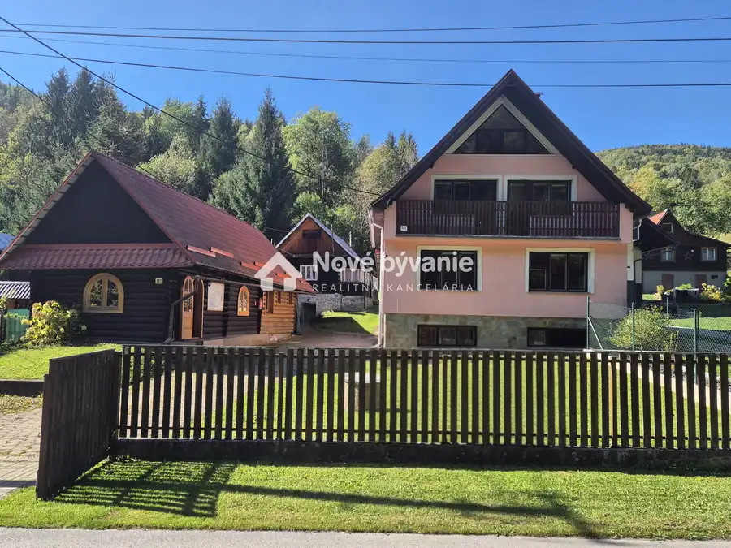
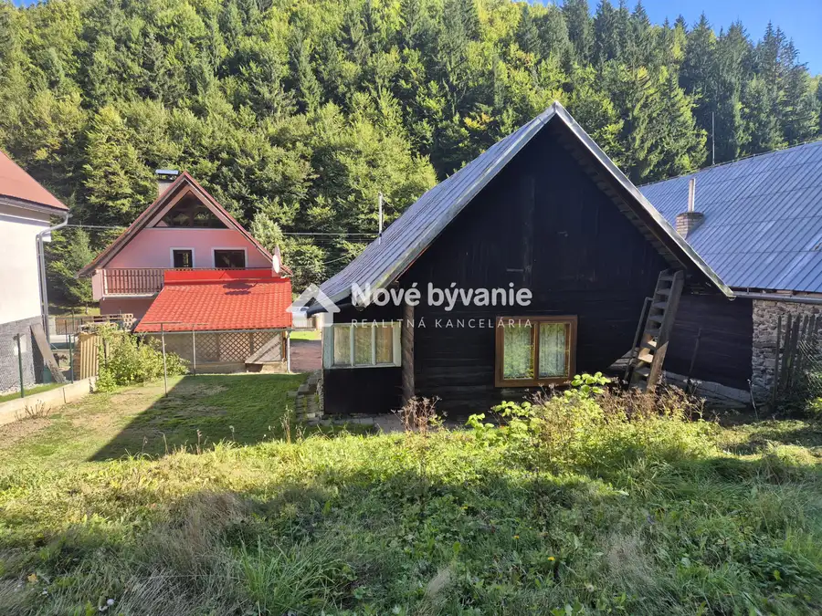
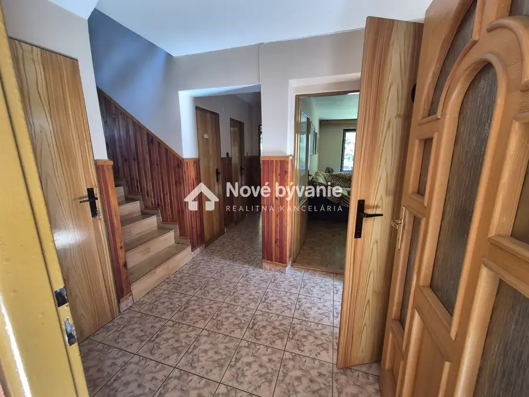
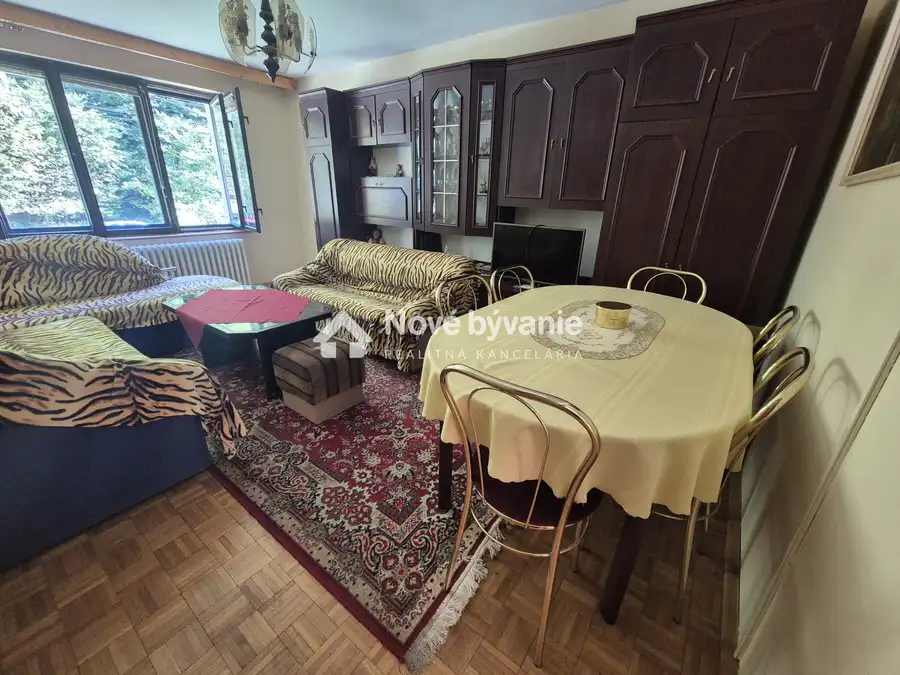
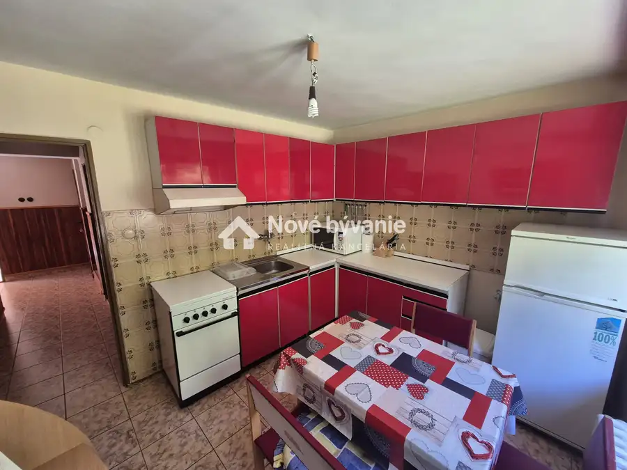
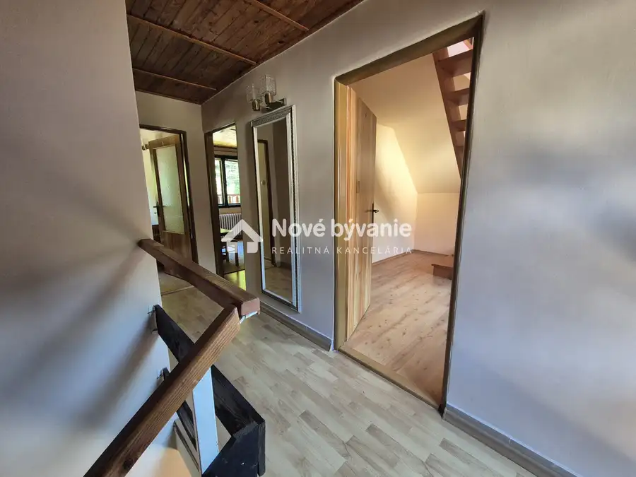

Predaj: Rodinný dom s dvoma drevenicami, obec Horná Mariková
Horná Mariková






- StavPôvodný stav
- VlastníctvoOsobné
O nehnuteľnosti
Videoprezentácia dom TU: youtube.com/shorts/BLj89MuvV6cVideoprezentácia Drevenica I. TU: youtube.com/shorts/BL6WjIyQ0uU(N030-12-MAKN) Ponúkame na predaj v obci Horná Mariková rodinný dvojpodlažný podpivničený dom skolaudovaný 1990, na pozemku o rozlohe 869m², na ktorom sa nachádzajú dve drevenice s popisným číslom, s možnosťou rekreačného využitiaTyp: Rodinný dom dvojpodlažný, podlahová plocha domu 150m², rozmery domu 8 x 8,5mDispozične sa dom skladá z pivničnej časti, prízemnej časti, prvého podlažia a podkroviaPivničná časť: chodba, technická miestnosť, kúpeľňa, špajza, kotolňa s koltom na tuhé palivo, sklad na palivoPrízemie: zádverie, chodba, kúpeľňa s vaňou, obývacia izba, kuchyňa, samostatná toaleta, špajzaPrvé poschodie: dve spálne, technická miestnosť, samostatná toaleta, dva balkónyPodkrovie: jedna miestnosť zariadená s nábytkom na mieru Technické vybavenie:• Obvodové mury kvádra, vnútorne priečky pálená tehla, betónové stropy, zateplený• Podlahy - dlažba, linoleum, parkety, laminátové podlahy• Vykurovanie - kotol na tuhe palivo zo zásobníkom – drevené palety, strešná krytina plech• Okná drevené kaslíkové pôvodné• Vlastná studňa, odpadové vody žumpa, el. energia 230/400, telefónna linka, internej pevný T-Com. Drevenica I. z roku 1940 pôvodná drevenica prešla kompletnou rekonštrukciu v roku 1990. Podlahova plocha drevenice je 110m². Dispozične riešenie:Prízemná časť, vstupná miestnosť s barom, spoločenská miestnosť s jedálňou, kuchynka dve kúpeľne s toaletami.Podkrovná časť: tri priechodné miestnosti - spálne s 12 lôžkami Technické vybavenie• drevenica s zastavanou plochou 58m²• vykurovanie elektrické - vykurovacie telesá, ohrev vody - eklektický bojler, vlastná studňa, žumpa• strešná krytina plech, zateplený krov• prístup priamo z miestnej asfaltovej komunikácie Drevenica II. z roku 1930 vhodná na rekonštrukciu, resp. prestavbu zastavaná plocha 58 m².• tri samostatne miestnosti, piecka na tuhé palivo, toaleta, vlastná studňa Lokalita:Pozemok s domom sa nachádza v pokojnej časti obce s možnosťou využívania na rekreačne účely. Popred pozemok vedie miesta asfaltová komunikácia v zimných mesiacoch riadne udržiavaná. V okolí sa nachádza množstvo turistických trás a cyklotrásDostupnosť miest – Púchov 23km, Považská Bystrica 19km, Ski Centrum Kohútka 17 km.Celková cena domu s dvoma drevenicami a pozemkom je: 320.000,-€, v prípade vážneho záujmu, korektného a rýchleho jednania je však možná dohoda.V cene je zahrnutý kompletný právny servis a finančný servis, zmluvy spojené s prevodom vlastníckych práv, kúpno-predajné zmluvy, vklad na kataster. Pozemok Vám radi predstavíme na obhliadke. Tel. č. +421 911 389 132, knizka@novebyvaniereality.sk.
Parametre
- Druh
- Rodinný dom
- Dátum zverejnenia
- 05. 10. 2026
- Plocha balkónu v m2
- 7 m²
- Plocha pozemku
- 869 m²
- Počet izieb / miestností
- 5
- Počet nadzemných podlaží
- 2
- Stav nehnuteľnosti
- Pôvodný stav
- Telekomunikácie
- Internet
- Typ
- Predaj
- Typ konštrukcie
- Zmiešaná
- Vlastníctvo
- Osobné
- Vybavenie
- Balkón, Pivnica
- Vykurovanie
- Lokálne
- Zariadenie
- Čiastočne zariadené
- Zastavaná plocha
- 68 m²
- Úžitková plocha
- 0 m²